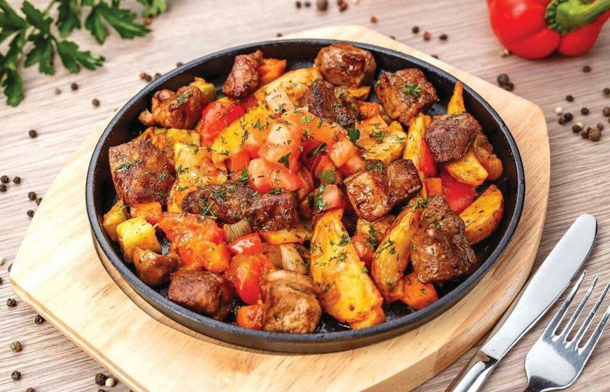
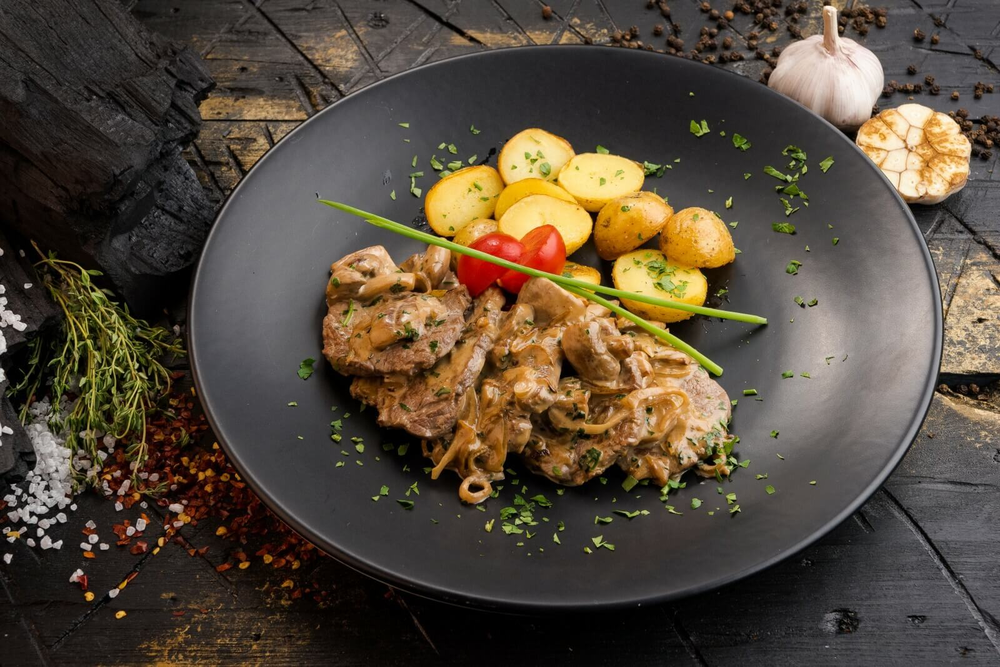
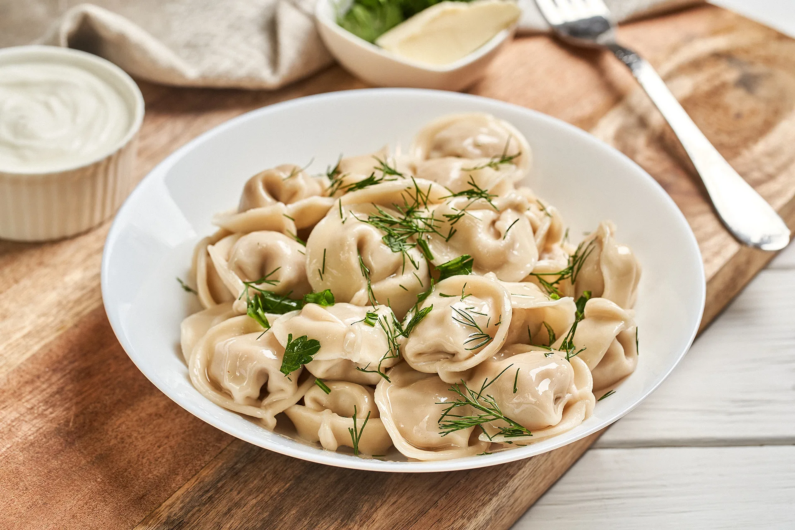

ЖАРКОЕ
Жарко́е — мясное блюдо. Фактически — жареное мясо. Блюдо из какой-либо части животного (без разделки на куски), запечённой в духовом шкафу или в русской печи. Название связано не с термином «жаренье», а с существительным «жар», «жара», поскольку блюдо приготавливается не на плите, а в самой печи, в её наибольшем жару. В современной кухне словом «жаркое» часто называют блюдо, больше похожее на венгерский гуляш — мясо, тушённое с картофелем, другими овощами и специями после предварительной обжарки или без неё. Оно подается с большим количеством бульона и без дополнительного гарнира (часто — в горшочке).
В XIX веке в обеде из двух кушаний обыкновенно первым подавали суп, а вторым — жарко́е, если же обед состоял из многих кушаний, то жарким называли последнее подаваемое жареное, которым обыкновенно бывала живность или дичь, и к нему обыкновенно подавали ещё и салат. Мясо молодых животных, содержащее много воды (молодые поросята, ягненок, барашек), рекомендовалось жарить, дабы их мясо имело больше консистенции. Жаркое не советовали солить до окончания жарки, потому что соль, попавшая на мясо, извлекает из него сок, а задача хорошего жаренья состоит в сохранении сока в жарком. Жаркое теряло в весе около трети. При жарке мясо теряло несколько больше веса, чем при жарке английских ростбифов. Жирное мясо теряет в весе больше.
Рецепт
Для приготовления данного продукта понадобятся эти продукты:
- Куриное бедро (филе без костей и кожи) - 500 г. (3 шт.)
- Картофель - 600 г.
- Перец болгарский красный - 200 г.
- Помидор - 100 г.
- Лук репчатый - 130 г.
- Чеснок - 3-4 зубчика
- Петрушка свежая - 20 г.
- Укроп свежий - 10 г.
- Паприка молотая - 1 ч. ложка
- Соль - по вкусу
- Перец чёрный молотый - по вкусу
- Масло растительное - 75 мл (5 ст. ложек)
- Шаг 1
- Подготовьте продукты по списку. Филе куриного бедра можно заменить грудкой или другой частью курицы. Количество сухих ингредиентов и чеснока регулируйте по своему вкусу.Картофель, лук и чеснок очистите. Куриное мясо нарежьте небольшими кусочками. Курицу переложите в миску, добавьте по 0,5 ч. ложки соли и паприки, 2 щепотки чёрного перца и 1 ст. ложку растительного масла. Перемешайте.
- Шаг 2
- В глубокую широкую сковороду влейте оставшееся масло и разогрейте, выложите куриное мясо. Обжарьте курицу со всех сторон на среднем огне 10-12 минут, периодически помешивая. Затем переложите на тарелку.
- Шаг 3
- Пока жарится курица, лук нарежьте тонкими полукольцами, картофель – четвертинками. В оставшееся в сковороде масло выложите картошку и обжарьте на среднем огне около 15 минут. Сладкий перец очистите, нарежьте полосками, помидор – средними кусочками. Очищенный чеснок, зелень петрушки и укропа мелко порубите ножом. Картофель тем временем стал золотистым, почти готовым. Выложите его на тарелку.
- Шаг 4
- В сковороду отправьте лук, обжарьте 5 минут, помешивая. Добавьте сладкий перец и перемешайте. Обжаривайте ещё 5 минут, периодически помешивая. К обжаренным луку и перцу выложите картофель и курицу. Добавьте помидоры, чеснок и зелень. Перемешайте.
- Шаг 5
- Добавьте соль (1 ч. ложка), чёрный молотый перец (0,25 ч. ложки), молотую паприку (0,5 ч. ложки), перемешайте. Накройте сковороду крышкой. Готовьте на среднем огне около 10 минут, до полной готовности мяса птицы и картофеля. Жаркое из курицы с картошкой готово.
——————

БЕФСТРОГАНОВ
Бефстро́ганов — популярное во всём мире блюдо русской кухни, которое готовится из мелко нарезанных кусочков говядины с соусом. Получило название в честь графа Александра Григорьевича Строганова.
Первый рецепт «говядины по-строгановски с горчицею» был напечатан в книге «Подарок молодым хозяйкам» Е. И. Молоховец в 1871 году. Блюдо названо в честь графа Александра Григорьевича Строганова (1795—1891). По основной версии блюдо создал служивший у Строганова французский повар Андре Дюпон. По легенде, граф Строганов якобы очень любил цвидель-клопсы, но к старости ему стало трудно разжёвывать любимое блюдо, и повар стал нарезать для него мясо соломкой. По другой версии граф Строганов, как и многие вельможи того времени, будучи весьма состоятельным человеком, держал в Одессе так называемый «открытый стол», на который мог зайти любой образованный и прилично одетый человек. Блюдо, вероятно, подавалось и для таких открытых столов — во-первых, в силу удобства приготовления, выдержанности стандарта блюда, во-вторых, удобного деления на порции и в-третьих, в то же время вкусного. Один из поваров графа удачно объединил технологию французской кухни (обжаривание мяса, его подача с соусом) с приёмами русской кухни (соус подаётся не отдельно, а как русская подливка, вместе с мясом). Блюдо получило широчайшее распространение в мире: его подают в самых разных заведениях общественного питания: от ресторанов до столовых. После Второй мировой войны бефстроганов вошёл в номенклатуру международной ресторанной кухни как русское блюдо. По аналогии с этим блюдом готовят печень по-строгановски.
Рецепт
Для приготовления данного продукта понадобятся эти продукты:
- Говядина (мякоть) – 450 г.
- Лук репчатый – 150 г.
- Сметана – 100 г.
- Томатная паста – 30 г.
- Масло сливочное – 20 г.
- Масло растительное – 2-3 ст. ложки
- Мука пшеничная – 1,5 ст. ложки
- Соль – по вкусу
- Перец черный молотый – по вкусу
- Картофель – 1,2 кг.
- Масло сливочное – 20 г.
- Соль – по вкусу
- Шаг 1
- Подготавливаем продукты для приготовления бефстроганова с пюре. Также в процессе готовки нам понадобится пищевая пленка. Мясо тщательно промываем, протираем бумажным полотенцем и заворачиваем в пищевую пленку. Укладываем мясо на доску и скалкой отбиваем со всех сторон. Нарезаем мясо на куски толщиной 1 см. Затем каждый кусочек нарезаем поперек волокон на тонкие полоски. Очищаем лук и нарезаем его на мелкие кубики.
- Шаг 2
- В сковороде разогреваем растительное масло (1-2 ст. л.), затем кладем в него сливочное масло, растапливаем его. В сковороду кладем лук и обжариваем 5-7 минут до золотистого цвета. Затем перекладываем его в тарелку. Полоски мяса обваляем в муке.
- Шаг 3
- В сковороде разогреваем оставшееся растительное масло и выкладываем кусочки мяса. Не перемешиваем мясо, оно пустит сок. Тушим в собственном соку около 10 минут. В это время очищаем картофель и нарезаем произвольными кусочками. Промываем и заливаем водой, отвариваем до готовности (20 минут после закипания). В процессе варки солим воду.
- Шаг 4
- Мясо периодически начинаем перемешивать, следим, чтобы не подгорело, а поджарилось со всех сторон. Затем мясо солим, перчим, кладем лавровый лист, обжаренный лук, сметану и томатную пасту. Тушим мясо на небольшом огне 10-15 минут.
- Шаг 5
- С готового картофеля сливаем жидкость (оставляем 1 кружку жидкости, чтобы отрегулировать нужную нам консистенцию пюре). С помощью толкушки, толчем картофель, если нужно возвращаем немного жидкости к картофелю. Кладем масло и еще раз разминаем. Пюре с бефстроганов готово. Приятного аппетита!
——————

ПЕЛЬМЕНИ
Пельме́ни — блюдо русской кухни из пресного теста с начинкой из рубленого мяса или фарша, употребляемое в варёном виде. Было заимствовано русскими жителями Прикамья, Урала и Сибири у финно-угорских народов, получив широкое распространение в русской и советской кухнях.
Русское слово «пельмени» является заимствованием из пермских языков: коми, удм. пельнянь «хлебное ухо»: пель «ухо» + нянь «хлеб». Форма «пельмень» образовалась под влиянием севернорусского наречия, через которое слово попало в литературный язык. Уральские диалектные формы пермяни,пермени образовались в результате народно-этимологического сближения со словом Пермь. Некоторые популярные или устаревшие этимологические словари указывают в качестве источника «финно-угорские языки» в целом, мансийский и финский языки.Неясно, когда пельмени вошли в кухню коренных сибирских народов и когда они впервые появились в русской кухне. Одна из теорий предполагает, что пельмени, или варёные пельмени с начинкой в целом, возникли в Сибири; возможно, это упрощённая адаптация китайского цзяоцзы (в некоторых китайских диалектах его называют баомиан «包麵/包面») — эта теория подтверждается тем, что традиционные начинки для пельменей обильно приправлялись чёрным перцем и другими неместными специями. Пельмени, возможно, были завезены монголами из Китая в Сибирь и на Урал, откуда они постепенно распространились до Восточной Европы и вошли в национальную кухню русских и других соседних народов Китая: корейцев и народов Центральной Азии. Пельмени стали особенно популярны среди русских охотников. В. В. Похлёбкин считал, что пельмени пришли в русскую кухню с Урала и из Сибири, в конце XIV — начале XV веков. В русских письменных документах уральских населённых пунктов XVII—XVIII веков (с 1679 года) встречаются фамилии, образованные от слова «пельмени»: Пельменев, Пелненев, Пельменников. В Прикамье пельмени были блюдом как повседневного, так и праздничного (свадебного, поминального) стола.
Рецепт
Для приготовления данного продукта понадобятся эти продукты:
- Мука - 300 г.
- Кипяток - 1 стакан (250 г.)
- Соль - 1 ч. ложка
- Свинина - 200 г.
- Говядина - 200 г.
- Лук репчатый - 1 шт.
- Черный перец - 1 щепотка
- Соль - 1-2 ч. ложки
- Молоко - 0,5 стакана или вода - 0,5 стакана
- Шаг 1
- Продукты для пельменей перед вами.Как приготовить пельмени :Сделать тесто для пельменей. Для этого сперва просеять муку. Вскипятить чайник. В миску насыпать соль. Добавить 1 стакан кипятка.
- Шаг 2
- Подсыпая просеянную муку, быстро замесить мягкое тесто. Переложить тесто для пельменей на посыпанную мукой доску, хорошо обмять так, чтобы тесто не приставало к рукам. Тесто накрыть полотенцем. Дать постоять 20 минут.
- Шаг 3
- Тем временем сделать начинку для пельменей. Лук репчатый очистить, помыть и мелко нарезать. Мясо помыть, разрезать на кусочки. Пропустить через мясорубку. Посолить и поперчить. Добавить репчатый лук. Добавить столько воды или молока, чтобы фарш был не густым, но и не слишком жидким. Хорошенько перемешать. Фарш готов.
- Шаг 4
- Тесто для пельменей разделить на 4 части. Скатать каждый кусочек в колбаску. Каждую колбаску разрезать на 15-16 кусочков. Каждый кусочек раскатать скалкой в кружок. На каждый кружочек теста положить неполную чайную ложку фарша. Сложить заготовку вдвое и тщательно защипнуть края, ушки соединить. Так сделать все пельмени. Накрыть полотенцем, чтобы не подсохли. Или заморозьте впрок.
- Шаг 5
- Вскипятить 2,5 л воды. Посолить. Выложить одну порцию пельменей. Помешать, чтобы не слиплись. Дать вскипеть до всплытия пельменей и убавить огонь до среднего. Варить пельмени до готовности, 4-5 минут. При помощи шумовки вынуть пельмени в тарелку. Добавить кусочек сливочного масла. Пельмени с мясом готовы. Подавать горячими со сметаной, соусом или уксусом.Приятного аппетита!